Votre sécurité alimentaire, certifiée.
ISO 22000, FSSC 22000, IFS, BRC : nous vous accompagnons de la mise en place jusqu'au jour de l'audit.
Système qualité Rendez-vousDu thon aux dattes, des unités qui tournent.
Conserves de poisson, anchois, conditionnement des dattes : conception des plans, procédés et organisation du travail.
Assistance technique Rendez-vousAgrément sanitaire UE, dossier géré de bout en bout.
Plan d'hygiène, manuel d'autocontrôle et suivi auprès des services vétérinaires.
Agrément sanitaire Rendez-vousNos principaux domaines d'intervention
Perfect Conseil, cabinet de conseil en agroalimentaire : systèmes qualité et sécurité alimentaire, amélioration de la performance et organisation du travail, avec une expérience de terrain depuis 1998.
Systèmes qualité
Accompagnement à la certification des systèmes de management de la sécurité des denrées alimentaires et de la qualité.
En savoir plus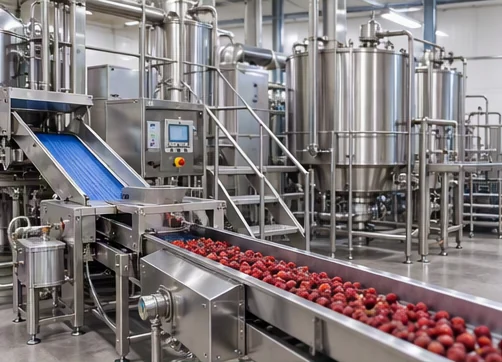
Assistance technique
Conception des plans, amélioration de la qualité, paramétrage des procédés et organisation du travail.
En savoir plusAgrément sanitaire
Plan conforme aux exigences d'hygiène, manuel d'autocontrôle, gestion du dossier auprès des services.
En savoir plus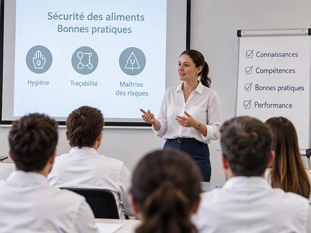
Formation
Audit interne, audit fournisseur, BRC, IFS, cahier des charges, conception hygiénique, HACCP selon ISO 22000.
En savoir plusGlobal GAP
Bonnes pratiques agricoles pour garantir la sécurité maximale des produits chez les distributeurs.
En savoir plus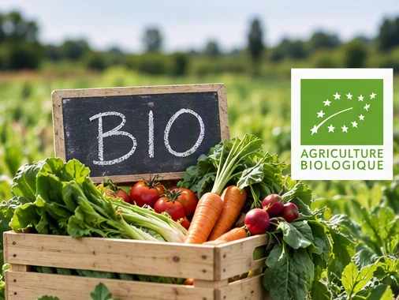
BIO
Certification Agriculture Biologique : se démarquer et rassurer les consommateurs.
En savoir plusPourquoi Perfect Conseil
Ce que nos clients retrouvent à chaque mission.
Écoute et sur-mesure
Nous adaptons nos conseils d'expert à votre façon de travailler, et non l'inverse.
Rigueur
Des systèmes documentés et conformes aux référentiels, jusqu'à l'audit de certification.
Réactivité
Un interlocuteur disponible, capable de s'adapter aux imprévus du terrain.
Discrétion
Vos données, vos procédés et vos résultats restent strictement confidentiels.
Notre démarche
De l'état des lieux à la certification, quatre étapes claires.
Diagnostic
Audit de l'existant et analyse des écarts par rapport au référentiel visé.
Mise en place
Procédures, plan HACCP, manuel d'autocontrôle, paramétrage des procédés.
Formation
Sensibilisation et formation des équipes : hygiène, audit interne, bonnes pratiques.
Certification
Préparation de l'audit, présence le jour J et suivi des actions correctives.
Nos produits et terrains d'intervention
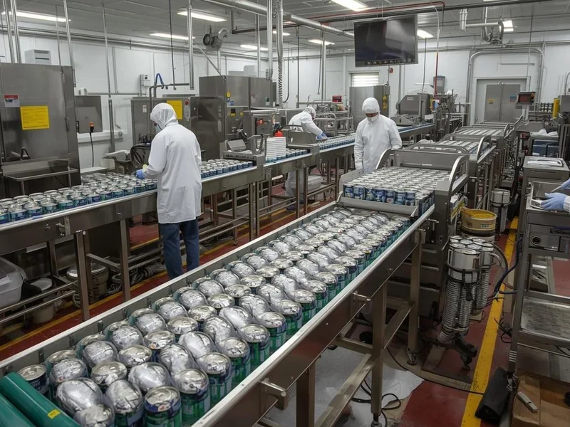
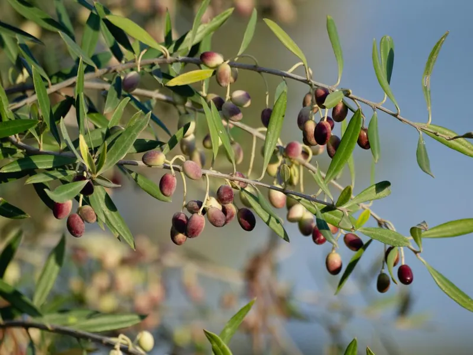
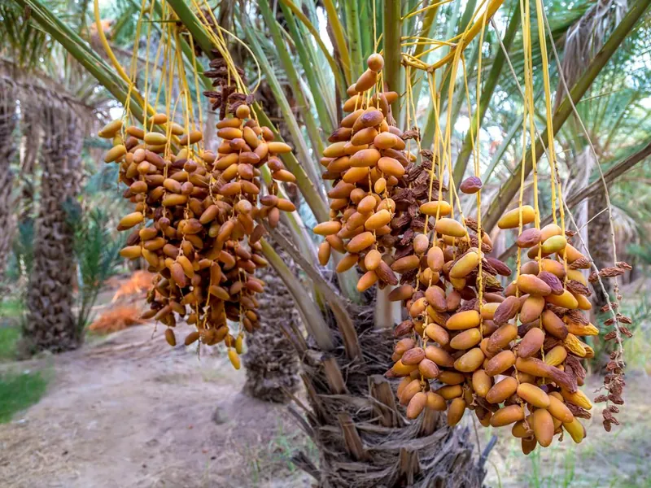
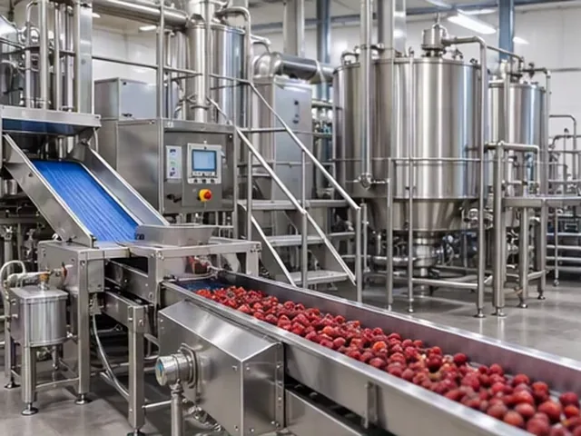
Ils nous ont fait confiance
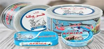
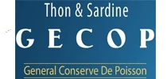
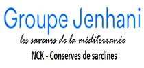
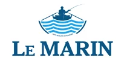
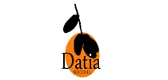
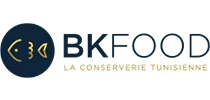
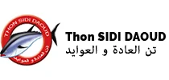
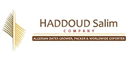
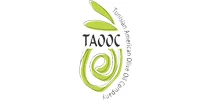
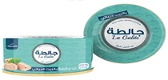
« Au cours de la certification FSSC 22000, vous avez contribué à faire aboutir tous nos efforts. Votre réactivité et votre capacité d'adaptation sont des atouts que j'ai grandement appréciés. »Souad Djeffal, Tolga Agro FoodTous les témoignages
Une question sur la certification ?
ISO 22000, FSSC 22000, IFS, BRC, agrément sanitaire : les réponses aux questions les plus fréquentes.
Un projet de certification ou de mise à niveau ?
Parlons-en : réponse rapide, sans engagement.
Obtenir un rendez-vous